31th SEANET Convention

9M2KN. HS1YL. JR3MVF
GaLa Dinner (11/29)
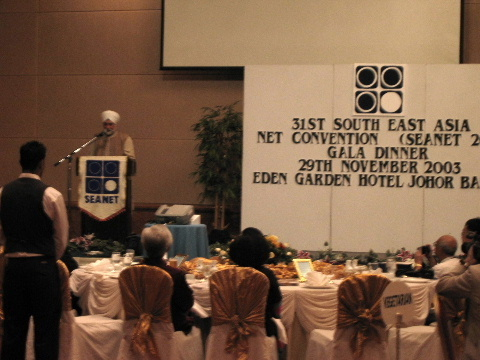
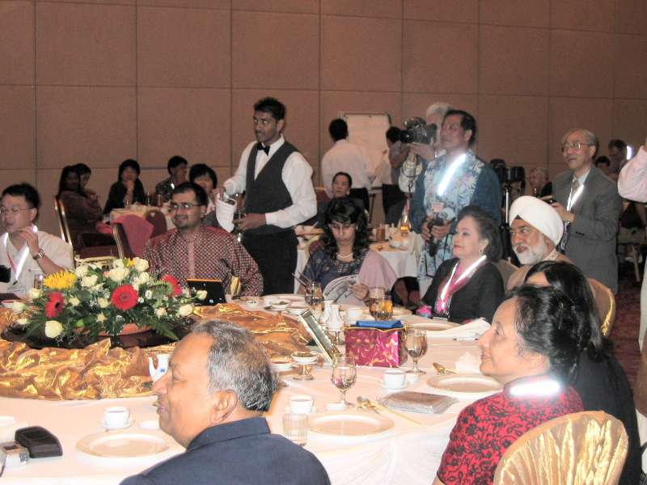
(左)開催国を代表して挨拶する9M2KN/ VIP席の皆さん
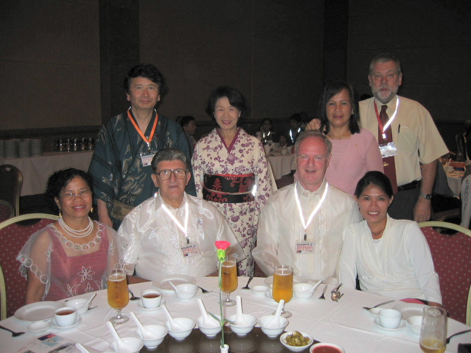
(手前左から)
フィリピンの正装で参加したDU9/G4UNL夫妻. DU7/G4DUM夫妻
後方は左からJA1BRK(DU1ZV)/JR1FBE夫妻. VK6UO夫妻
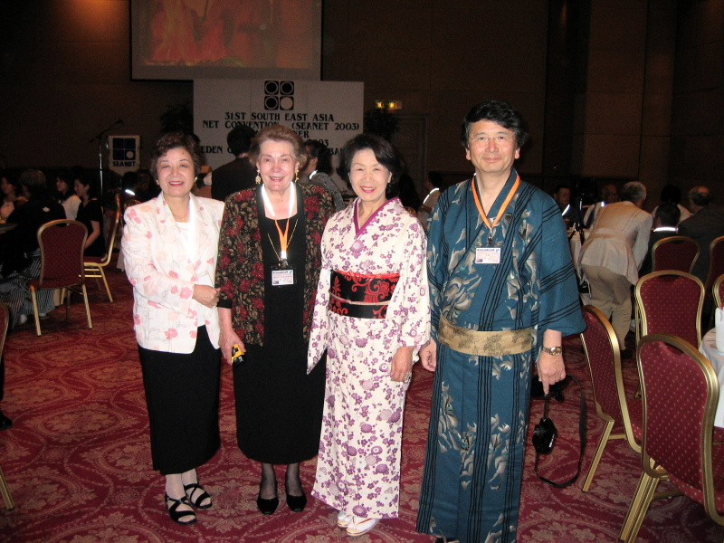
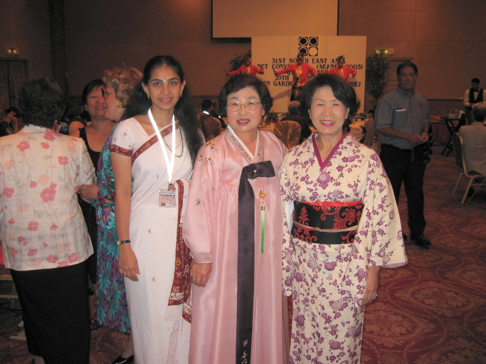
和服姿のJA1BRK御夫妻はSEANETには欠かせない。左からJR3MVF. WD5FQX. JA1BRK/JR1FBE
(右)民族衣装で目を引いたインド、韓国、日本の美女3人。
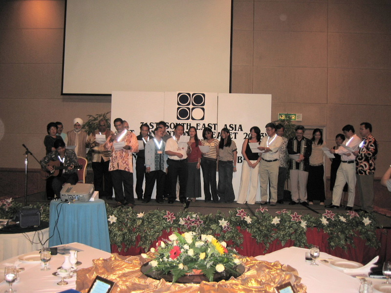
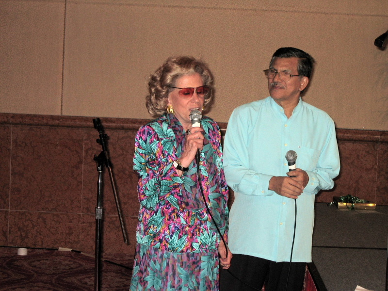
9M6MUの伴奏で"ブンガワンソロ"を歌う開催国マレーシアの参加者/ メキシコから参加したXE1IC(左)
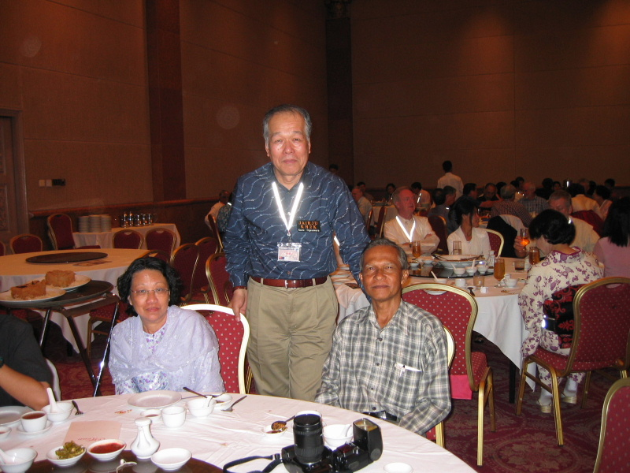
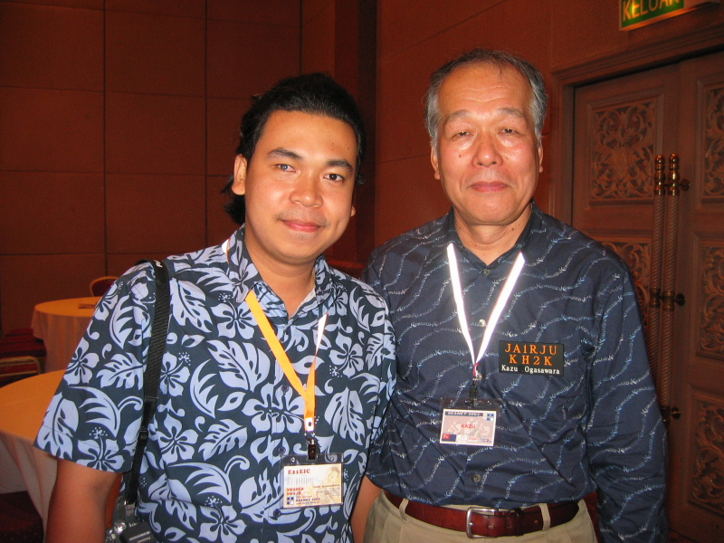
9M6MO御夫妻とJA1RJU/ E21EIC(XW1IC)とJA1RJU(9M6JU)
Surprise Item !?
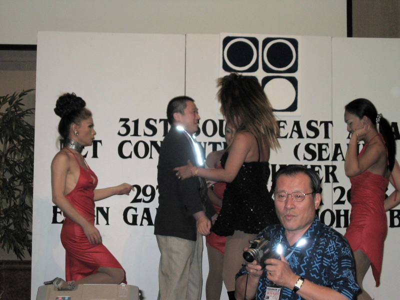
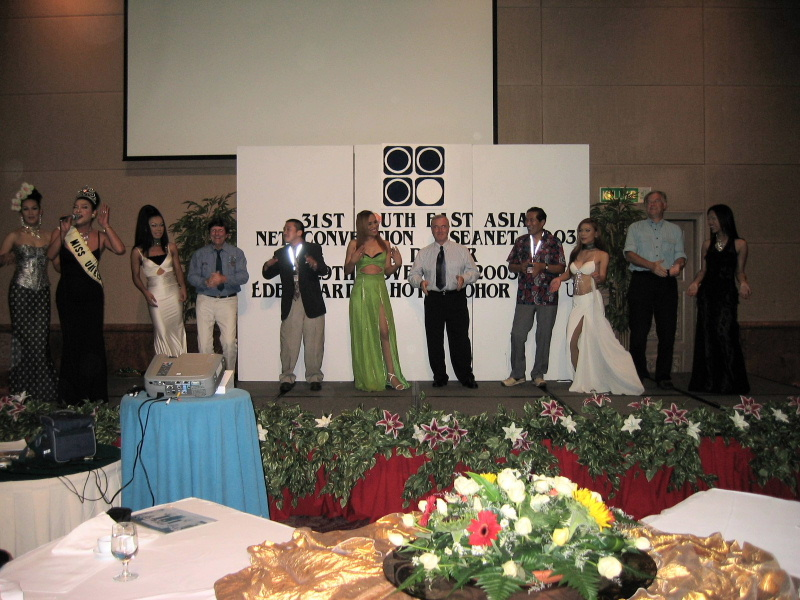
"おかま・ショー"とは知らず？鼻の下を伸ばす...!!
 |
SEANET 2003 |